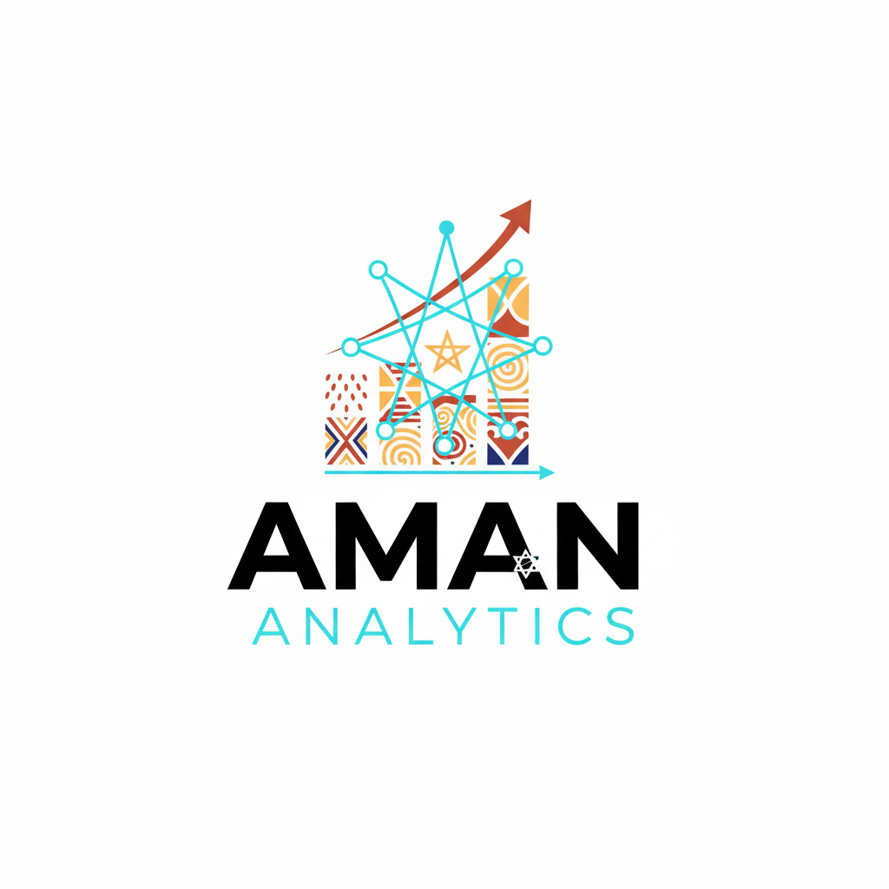

I transform raw data into actionable insights using advanced statistical models (Regression, Time Series, ML) and tools like Python and R.
View My WorkMixed-Effects Regression model to predict transaction fraud risk, resulting in a live risk-scoring dashboard.
View Case Study & Demo →Time Series analysis using ARIMA to forecast peak traffic hours in the FCT based on historical weather and public data.
View Analysis →Key statistical software and techniques used:
I am actively seeking opportunities in Data Analysis and Quantitative Risk. Connect with me!
Email: amananalyticss@gmail.com | LinkedIn: Aman Analytics | GitHub Aman